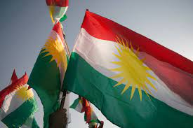

i am from shaqlawa.......
Kurdistan (Kurdish: کوردستان ,Kurdistan [ˌkʊɾdɪˈstɑːn] (About this soundlisten); lit. "land of the Kurds")[5] or Greater Kurdistan[6][7] is a roughly defined geo-cultural territory in Western Asia wherein the Kurdish people form a prominent majority population[8] and the Kurdish culture, languages, and national identity have historically been based.[9] Geographically, Kurdistan roughly encompasses the northwestern Zagros and the eastern Taurus mountain ranges.[10] Kurdistan generally comprises the following four areas: southeastern Turkey (Northern Kurdistan), northern Iraq (Southern Kurdistan), northwestern Iran (Eastern Kurdistan), and northern Syria (Western Kurdistan).[11][12] Some definitions also include parts of southern Transcaucasia.[13] Certain Kurdish nationalist organizations seek to create an independent nation state consisting of some or all of these areas with a Kurdish majority, while others campaign for greater autonomy within the existing national boundaries.[14] Historically, the word "Kurdistan" is first attested in 11th century
this is shaqlawa sooo Shaqlawa (Kurdish: Şeqlawe ,شەقڵاوە,[2][3] Syriac: ܫܩܠܒܕ, romanized: Shaqlāwa[4]) is a historic city and a hill station in the Erbil Governorate in the Kurdistan Region of Iraq. Shaqlawa, a city of approximately 25,500 people, lies 51 km to the northeast of Erbil, at the bottom of Safeen mountain. Shaqlawa is situated between Safeen mountain and Sork mountain, and sits 1066 m above sea level.[5] The city is known for its waterfalls, trees, and greenery.[6]
